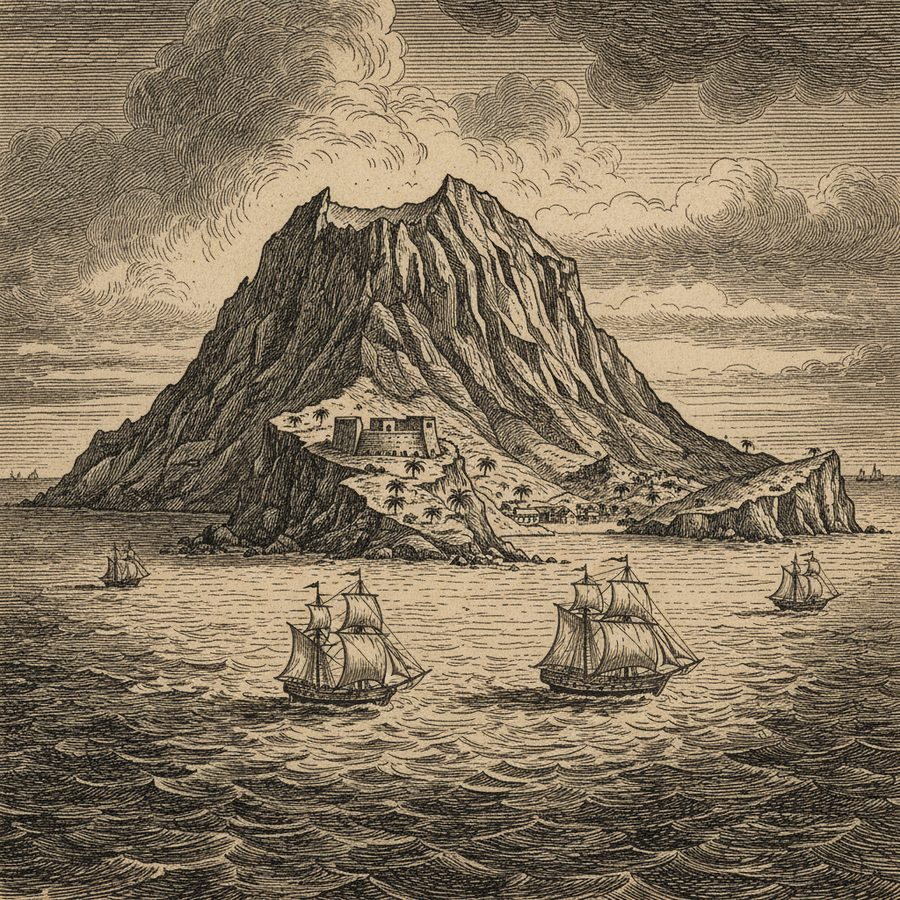
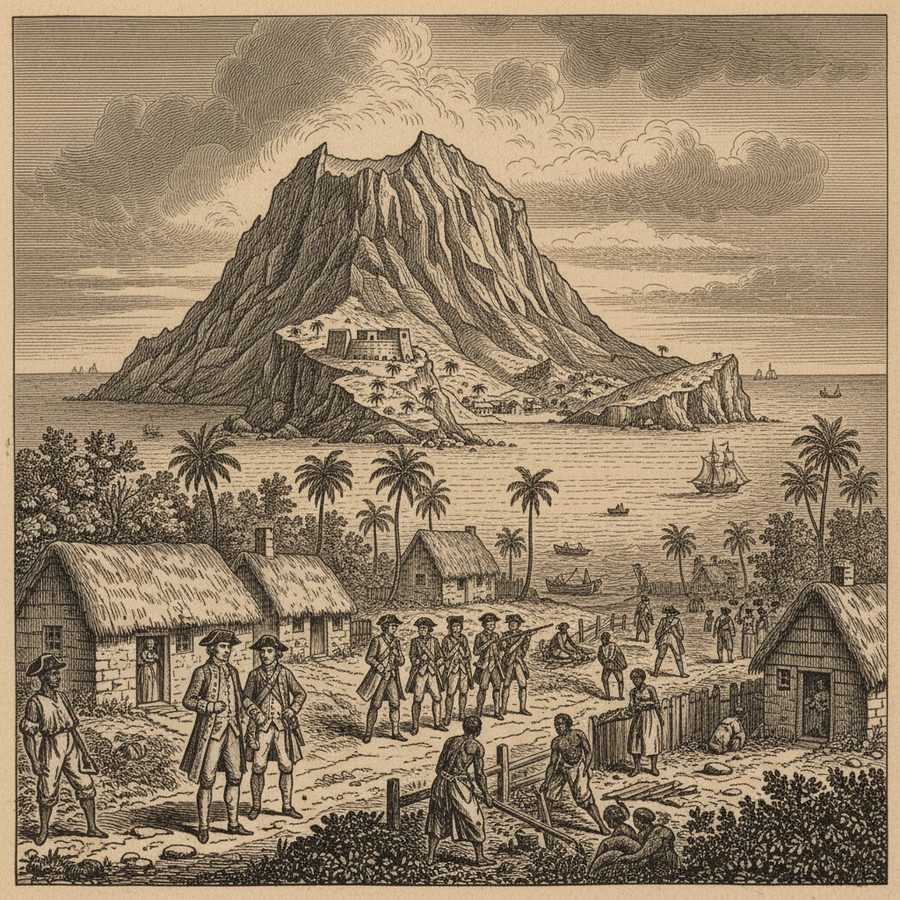
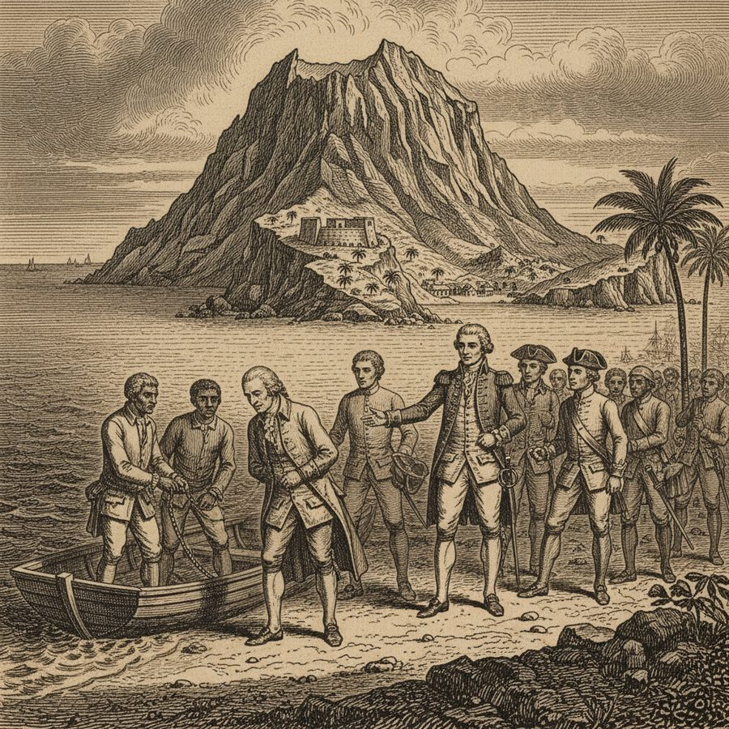
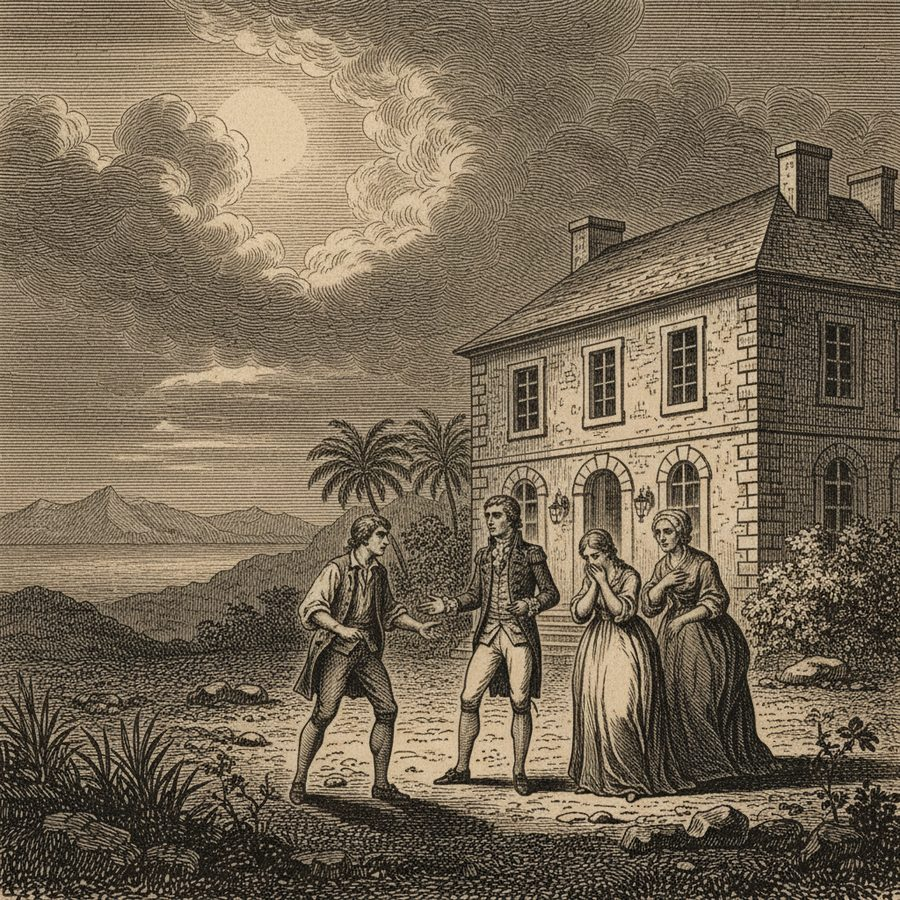
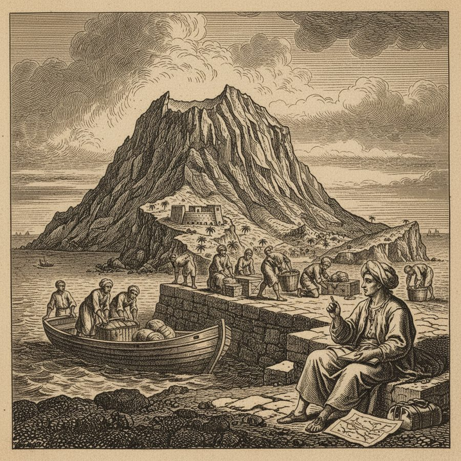

St. Helena, the Prison Rock
An 'impregnable' Atlantic rock, thick with rats, where a society of planters, soldiers and slaves keeps its own little scandals.
St. Helena rode for centuries as an impregnable fortress-island mid-Atlantic, famed for being beyond the reach of enemies, robbers, wild beasts and rigorous seasons — 'much infested with rats and mice,' though abounding in fish, and the great watering-place of the India trade. Noble, stopping there on the voyage out, found a tiny human world worth gossiping about: a beloved Governor recalled through a complaint artfully laid by an ungrateful officer who had owed his fortune to him and then succeeded him; the 'melancholy affair' caused in an honest planter's family by the indiscretion of a young officer; and the 'no less criminal behaviour of a young clergyman.' Amid the planters and soldiers sat the slaves, and Noble gave his readers his reflections on seeing them a people 'so miserably subjected' to another — before recording the strange innocence of the islanders, who had no knowledge of thunder, lightning, or the smallpox, and their peculiar manner of salutation.
Figures: the Governor, a young officer, a young clergyman, the slaves, Noble
The story as a comic





Why it stands out
A sparkling miniature of island life and 18th-century manners — and, in its note on the slaves and the 'ignorance of the inhabitants,' one of the book's little moral set-pieces, centuries before the island would be the prison of Napoleon.